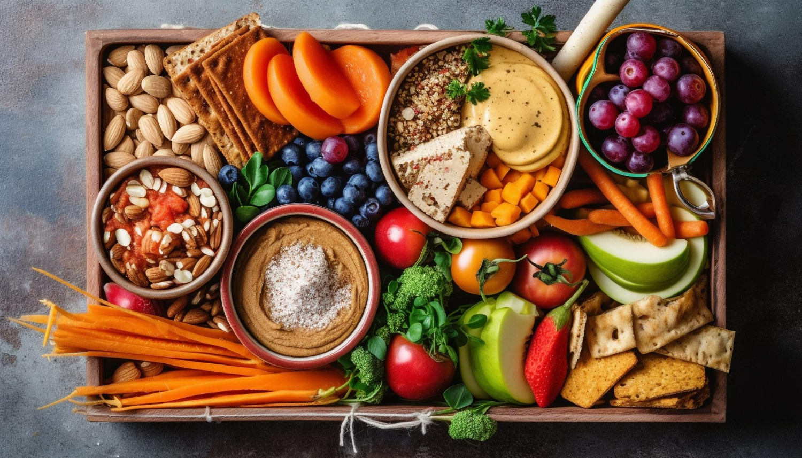

‹ Back
Food and Nutrition for Dementia
Benefits of Healthy Eating
A well-balanced diet rich in nutrients can provide several benefits for individuals with dementia:
- Support brain health and cognitive function
- Boost energy levels and mood
- Reduce the risk of other health complications
- Enhance overall well-being and quality of life
Nutrition Tips
Here are some nutrition tips for individuals with dementia:
- Offer small, frequent meals throughout the day
- Include a variety of nutrient-rich foods such as fruits, vegetables, whole grains, lean proteins, and healthy fats
- Encourage hydration by offering plenty of fluids
- Limit foods high in sugar, salt, and saturated fats
- Provide assistance with eating if needed, using adaptive utensils or finger foods

Nutritious Recipes
Here are some simple and nutritious recipes suitable for individuals with dementia: